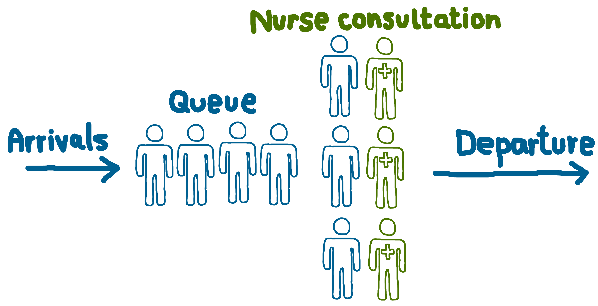

Example conceptual models
To illustrate how to construct reproducible simulation projects, we will use two examples:
- Nurse visit simulation. A classic queueing model, serves as a straightforward, “dummy” example to demonstrate basic concepts.
- Stroke pathway simulation. A real-world healthcare pathway model taken from a publish study, showing how similar methods can be applied in practice.
Example #1: Nurse visit simulation
This model represents a typical scenario where patients arrive at a clinic, wait to see a nurse, receive a consultation, and then leave. The aim is to understand resource utilisation (nurses) and patient waiting times.
Structure:
- Type: Discrete-event simulation of a queueing system.
- Key features:
- Arrivals: Patients arrival randomly, following a Poisson process. This means that the number of arrivals in a given period follows a Poisson distribution, and the time between each arrival follows an exponential distribution- two ways of describing the same process.
- Service: Each nurse serves one patient at a time. Service times are exponentially distributed.
- Servers: Multiple nurses work in parallel.
- Inputs:
- Average patient arrival rate.
- Average nurse service duration.
- Number of servers.

This is an example of an M/M/s queueing model. An M/M/s model as Markovian assumptions (“M/M”) that arrivals are poisson distributed and server times exponentially distributed, and the “s” refers to the number of parallel servers available. It is a classic and widely used queueing model, and is also known as a “multi-server” or “Erlang delay” model.
This model could be applied to a range of contexts, including:
| Queue | Server/Resource |
|---|---|
| Patients in a waiting room | Doctor’s consultation |
| Patients waiting for an ICU bed | Available ICU beds |
| Prescriptions waiting to be processed | Pharmacists preparing and dispensing medications |
For further information on M/M/s models, see:
- Ganesh, A. (2012). Simple queueing models. University of Bristol. https://people.maths.bris.ac.uk/~maajg/teaching/iqn/queues.pdf.
- Green, L. (2011). Queueing theory and modeling. In Handbook of Healthcare Delivery Systems. Taylor & Francis. https://business.columbia.edu/faculty/research/queueing-theory-and-modeling.
Example #2: Stroke pathway simulation
This model is based on a published study of stroke care. It simulates patient flow through acute stroke and rehabilitation units to support capacity planning and estimate the likelihood of admission delays for different patient groups. It is described in:
Monks T, Worthington D, Allen M, Pitt M, Stein K, James MA. A modelling tool for capacity planning in acute and community stroke services. BMC Health Serv Res. 2016 Sep 29;16(1):530. doi: 10.1186/s12913-016-1789-4. PMID: 27688152; PMCID: PMC5043535.
The original study implemented the model using SIMUL8 software. Based on the published description of the model’s logic and parameters, we have recreated it in both Python and R.
Structure:
- Type: Discrete-event simulation of a patient pathway.
- Arrivals: Multiple patient classes (e.g., stroke, TIA, complex neurological, other) each have their own arrival processes to the acute stroke unit and rehabilitation unit, with inter-arrival times drawn from specified distributions.
- Service: Patients experience lengths of stay in each unit based on distributions specific to their class and care type (e.g., lognormal for length of stay).
- Routing: After acute care, patients are routed to rehabilitation, early supported discharge, or exit the system, according to probabilities defined for each patient class.
- Resources: The model assumes infinite capacity for both acute and rehabilitation beds (i.e., no explicit queueing)
Patient pathway / process flow diagram: